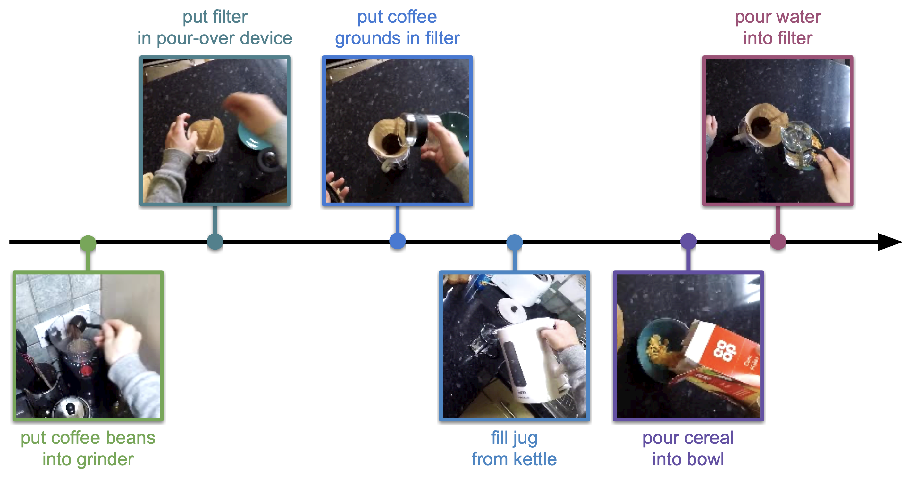
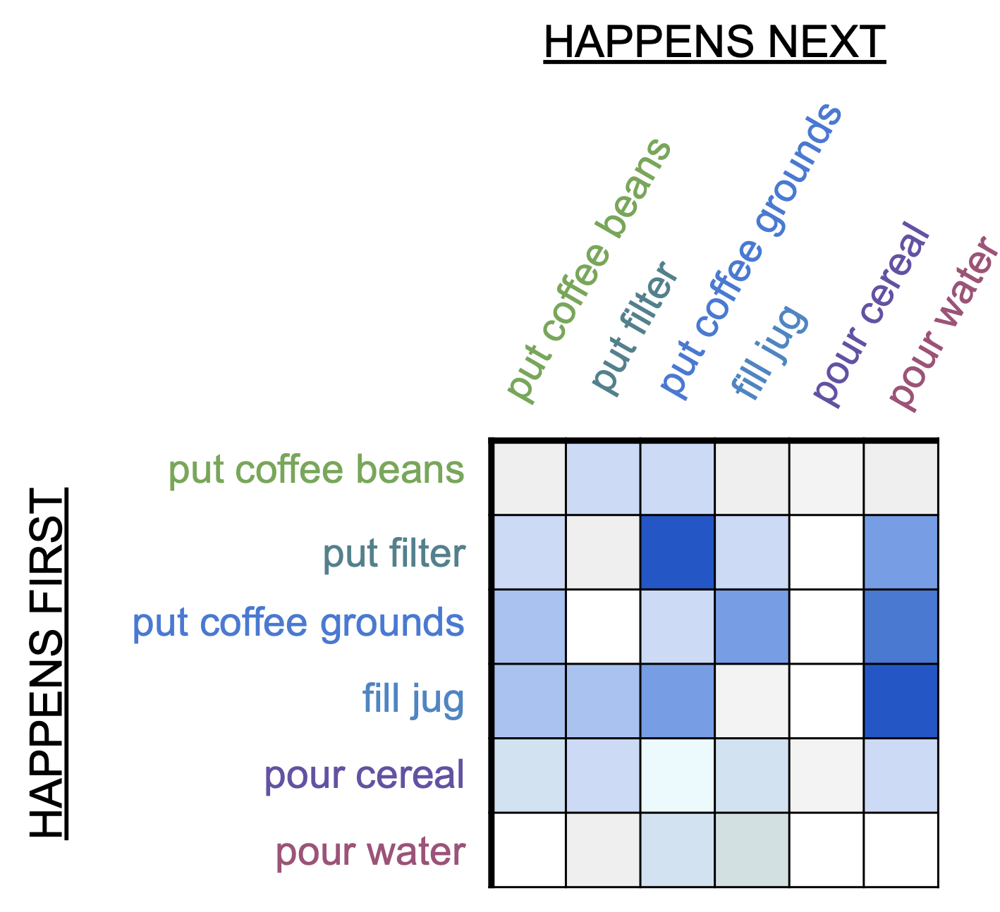
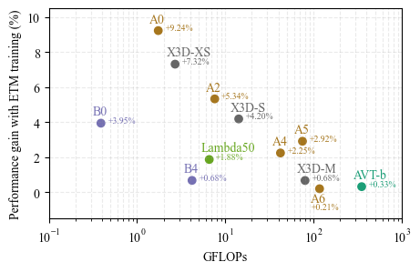
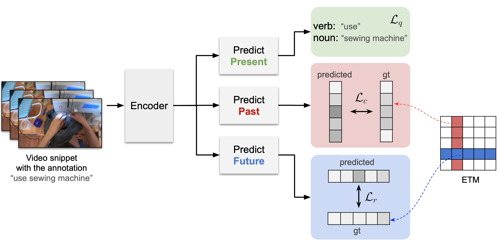
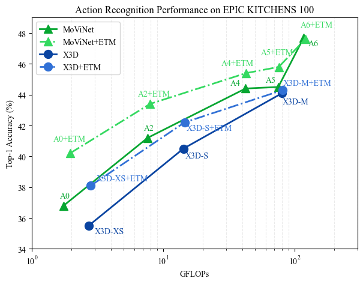
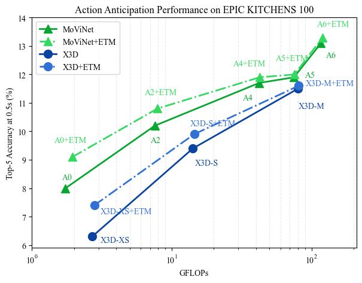

Team
Camilo Fosco
camilolu@mit.edu

SouYoung Jin
souyoung@mit.edu
Emilie Josephs
ejosephs@mit.edu
Aude Oliva
oliva@mit.edu
Camilo Fosco, Souyoung Jin, Emilie Josephs, Aude Oliva
 Computer vision models are excellent at identifying and exploiting regularities in the world. However, it is com- putationally costly to learn these regularities from scratch. This presents a challenge for low-parameter models, like those running on edge devices (e.g. smartphones). Can the performance of models with low representational power be improved by supplementing training with additional in- formation about these statistical regularities? We explore this in the domains of action recognition and action antic- ipation, leveraging the fact that actions are typically em- bedded in stereotypical sequences. We introduce the Event Transition Matrix (ETM), computed from action labels in an untrimmed video dataset, which captures the temporal con- text of a given action, operationalized as the likelihood that it was preceded or followed by each other action in the set. We show that including information from the ETM during training improves action recognition and anticipation per- formance on various egocentric video datasets. Through ablation and control studies, we show that the coherent se- quence of information captured by our ETM is key to this effect, and we find that the benefit of this explicit represen- tation of temporal context is most pronounced for smaller models.
Our proposed approach has two main components: the Event Transition Matrix (ETM) and the pre-training using this matrix. ETM is an efficient way to construct a knowledge base about the temporal relation between events in video scenes. We leverage these relations to help recognize current events or predict past or future events in the input video snippet.
We first create the ETM by computing the frequency with which each event comes before and after every other event, incorporating a decay function to account for temporal distance between events. Then, we normalize the matrix to obtain the row-wise and column-wise normalized matrices.
For pre-training with the ETM, we use a model with three modules: one for predicting the present event, one for predicting past events, and one for predicting future events. We train the model to minimize the loss functions for these predictions, incorporating the ETM to capture the temporal context.
Mathematically, we define the ETM update as:
M(yl, ym) += δ(m - l)
The row-wise normalized matrix is defined as:
MR(i, j) = M(i, j) / Σk=0N M(i, k)
The training objective is:
L = ωqLq + ωcLc + ωrLr
We show that low-complexity models benefit more from the ETM protocol than larger models with more representational power. The figures below show performance comparisons, with and without ETM training, on several well-known model families.
 Camilo Fosco
camilolu@mit.edu
SouYoung Jin
souyoung@mit.edu
Emilie Josephs
ejosephs@mit.edu
Aude Oliva
oliva@mit.edu